Filogenias en R
Axel Arango & Fabricio Villalobos & Juliana Herrera
Filogenias en R
Primero, ¿Qué es un árbol Filogenético?
Un árbol filogenético es un diagrama que muestra la relación de parentesco entre especies (o taxones)
Uno de los formatos más utilizados para representar filogenias es el Newick (.tree)
El formato Newick es una notación para representar parentescos utilizando paréntesis y comas.
Si queremos decir que A y B se parecen más entre ellos que con X, lo anotaríamos así:
Para que R pueda identificar esta notación, se puede usar el paquete ape:
library (ape)read.tree (text= "((A,B),X);" ) %>% plot ()
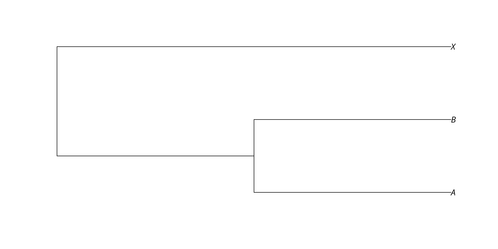
El formato Newick es anidado, por lo que podemos explorar la relación entre diferentes grupos. Por ejemplo:
Sabemos que los lobos, los coyotes y los zorros pertenecen a Canidae, pero que los lobos y los coyotes son del mismo género
<- "(Vulpes_vulpes,(Canis_lupus,Canis_latrans));" read.tree (text= Canidae) %>% plot ()
Si agregamos murciélagos:
<- "(Desmodus_rotundus,(Vulpes_vulpes,(Canis_lupus,Canis_latrans)));" read.tree (text= Mammalia) %>% plot ()
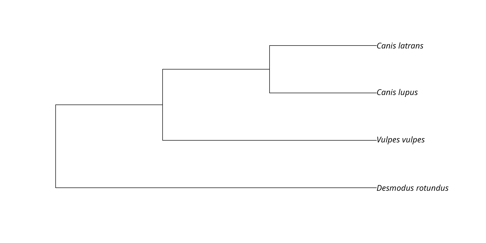
También podríamos anexar otros grupos pj: cuervos y zanates. ¿Estos dónde irían?
<- "((Quiscalus_mexicanus,Corvus_corax),(Desmodus_rotundus,(Vulpes_vulpes,(Canis_lupus,Canis_latrans))));" read.tree (text= tetrapoda) %>% plot ()
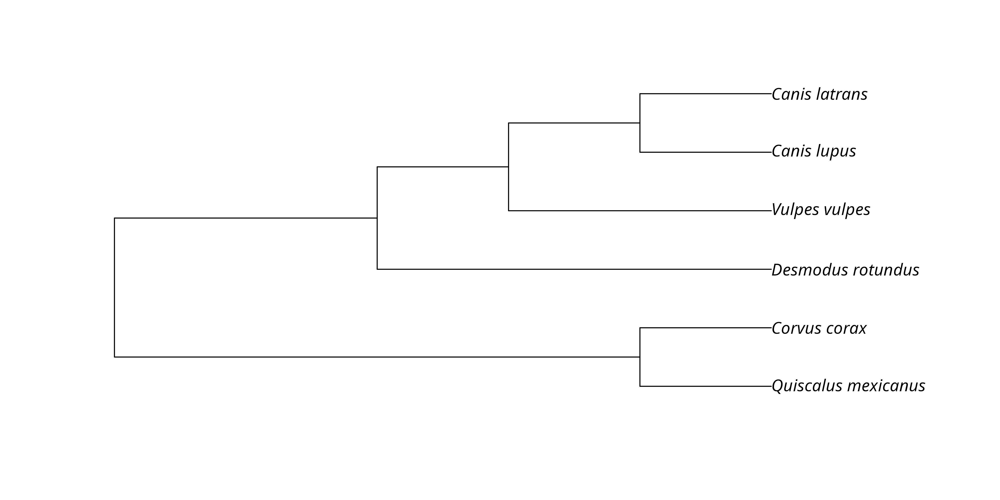
Si agregamos una planta, los mamíferos y las aves se anidarían.
<- "(Sideroxylon_celastrinum,((Quiscalus_mexicanus,Corvus_corax),(Desmodus_rotundus,(Vulpes_vulpes,(Canis_lupus,Canis_latrans)))));" <- read.tree (text= Eukarya) plot (Nktree)
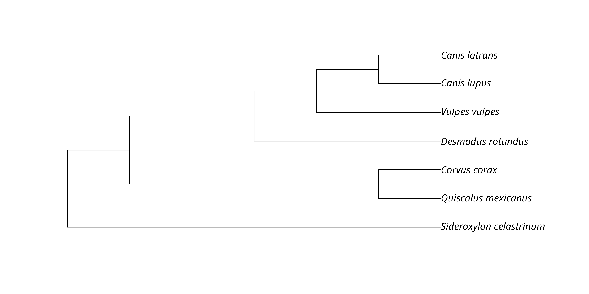
En esta práctica haremos uso del paquete ggtree para graficar, personalizar y anotar árboles filogenéticos
Paquetes necesarios:
library (ape)library (ggtree)library (deeptime)library (tidytree)library (ggimage)library (geiger)library (caper)library (TDbook)library (here)
¿Qué insumos utilizaremos?
En este ejercicio utilizaremos una filogenia con las especies del Orden Siluriformes (peces) a las cuales se le conoce su tipo de migración. Esto es un subset de la Megafilogenia para peces propuesta por Rabosky (2018)
<- read.table (here ("data" ,"DataFish.txt" ))<- read.tree (here ("data" ,"treefish.txt" ))$ tip.label<- gsub ("_" , " " , fishtree$ tip.label)
Podemos visualizar la información rápidamente usando ape,
plot (fishtree, show.tip.label= F)
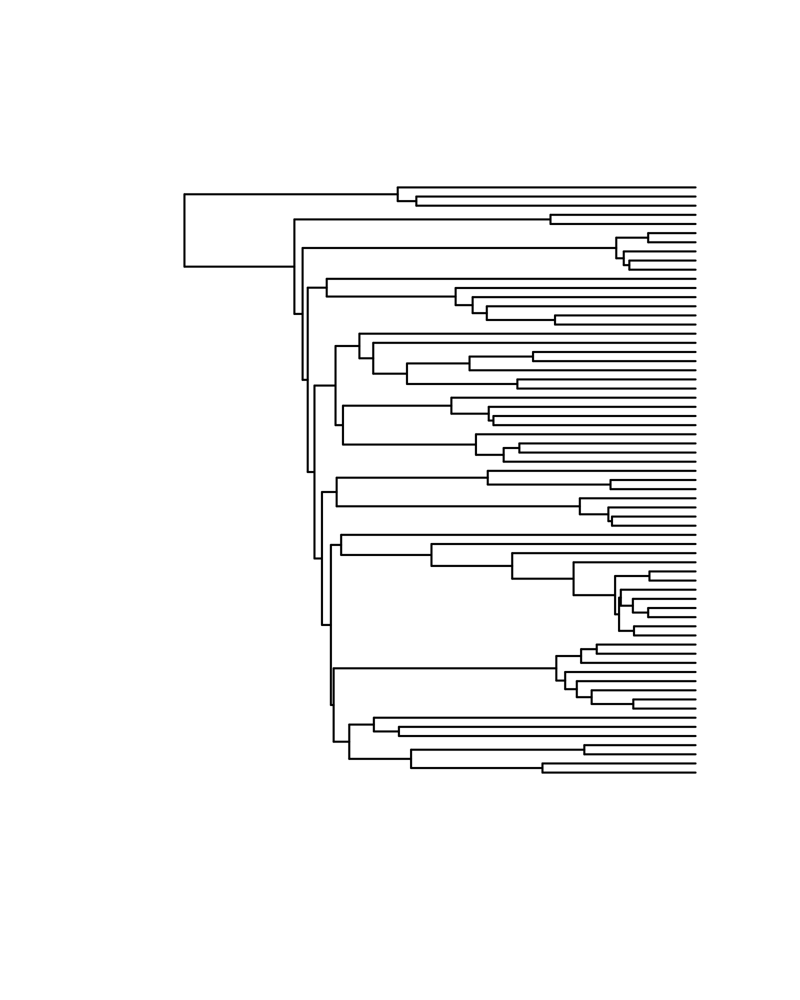
Ahora graficaremos el mismo árbol utilizando ggtree, el cual sigue una formula idéntica a la de ggplot. Nuestro árbol base se llamará p1 :
<- ggtree (fishtree,color= "black" ,size= 0.5 )plot (p1)
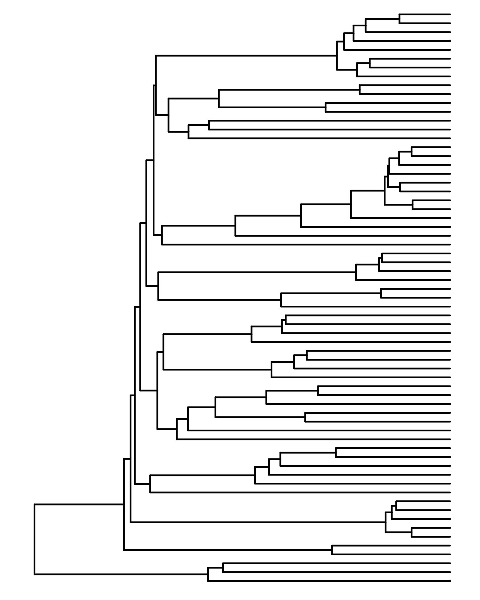
Con p1, al igual que con cualquier otro gráfico de ggplot, podemos agregar parámetros gráficos para personalizar o agregar anotaciones a nuestra filogenia.
Por ejemplo, podemos cambiar la disposición de la filogenia utilizando el parámetro layout_:
+ layout_dendrogram ()+ + layout_fan ()+ + layout_circular ()
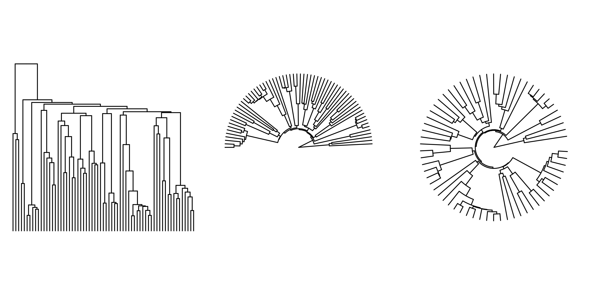
También podemos cambiar el color del fondo del gráfico
+ theme_tree (bgcolor= "skyblue" )
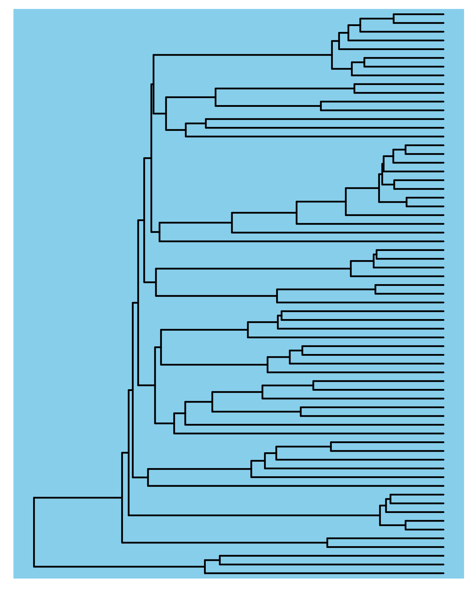
O modificar las puntas:
+ geom_tippoint (size= 2 ,color= "red" ,fill= "black" ,shape= 21 )
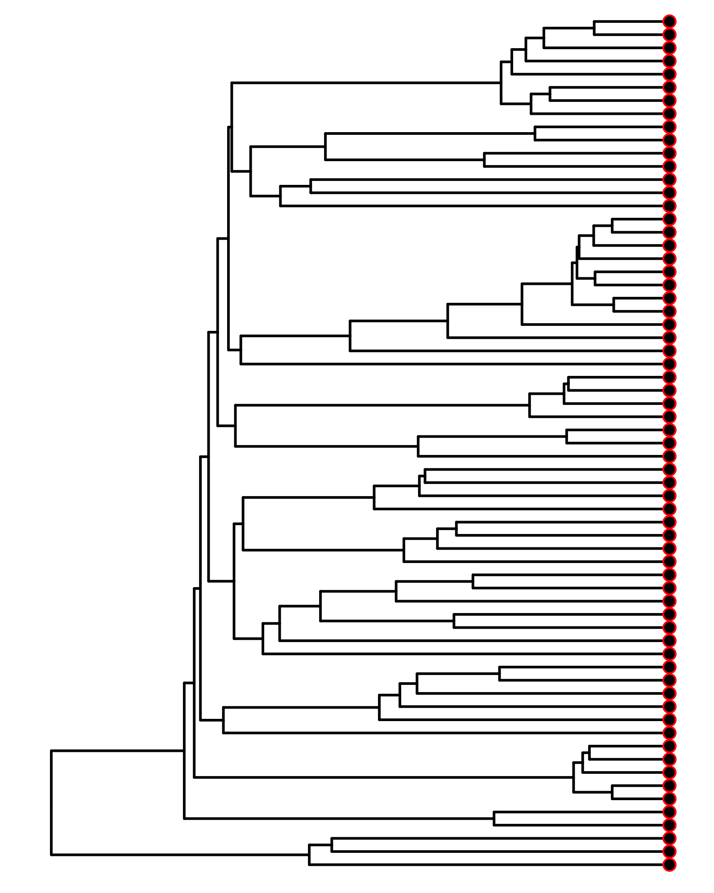
o formas a los nodos:
+ geom_nodelab (aes (label= node),size= 2 ,color= "black" , hjust= - 0.8 )+ geom_nodelab (aes (subset = (node == 109 ), label = "*" ),color = "red" ,size= 10 ,hjust= 1 )+ geom_nodepoint (size= 2 ,color= "red" ,fill= "black" ,shape= 21 )
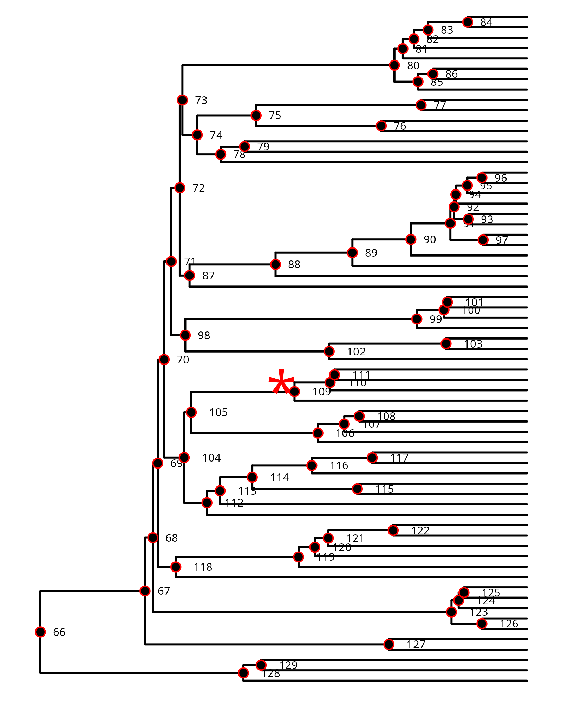
Escalas temporales
Podemos agregar escalas de tiempo con el paquete deeptime
<- revts (p1)+ geom_tiplab (size= 1 ,color= "black" ,angle= 0 )+ xlim (- 100 ,30 )+ ylim (- 2 ,70 )+ coord_geo (abbrv = T,neg= T,skip= NULL ,dat= list ("epochs" ),size= 2 )
Recordemos que los parámetros son aditivos (con + podemos ir agregando uno por uno)
+ layout_fan (angle = 180 )+ xlim (NA ,150 )+ geom_tiplab (hjust= - 0.2 ,size= 2 ,color= "black" )+ geom_tippoint (size= 1 ,color= "black" ,shape= 10 )+ geom_nodelab (size= 1 ,color= "black" )+ geom_nodepoint (size= 2 ,color= "red" ,alpha= 0.3 ,shape= 16 )
Anotaciones en Árboles
Podemos incluir texto adicional en los gráficos,Por ejemplo: quiero seleccionar la parte de la filogenia donde se encuentra las especies de la Familia Pimelodidae
Obtener nodos
Para esto primero debemos encontrar el nodo del ancestro en común más reciente para este grupo. Usando un tibble y la estructura de dplyr es muy fácil
Después usando la función getMRCA() podemos encontrar el ancestro en común de estas especies
$ sciname<- row.names (fishdata)$ sciname <- gsub ("_" , " " , fishdata$ sciname)<- fishdata %>% filter (Family== "Pimelodidae" )<- getMRCA (fishtree,pimelo$ sciname)
Ahora conociendo que el ancestro en común de la familia Pimelodidae se encuentra en el nodo 80, puedo utilizar esta información para anotar la filogenia utilizando el parámetro geom_cladelab :
+ xlim (NA , 110 )+ geom_cladelab (node= nodepimelo,label = "Pimelodidae" ,offset= 0 ,barcolor= "red" ,textcolor= "red" ,angle= 0 , offset.text= 0.1 )
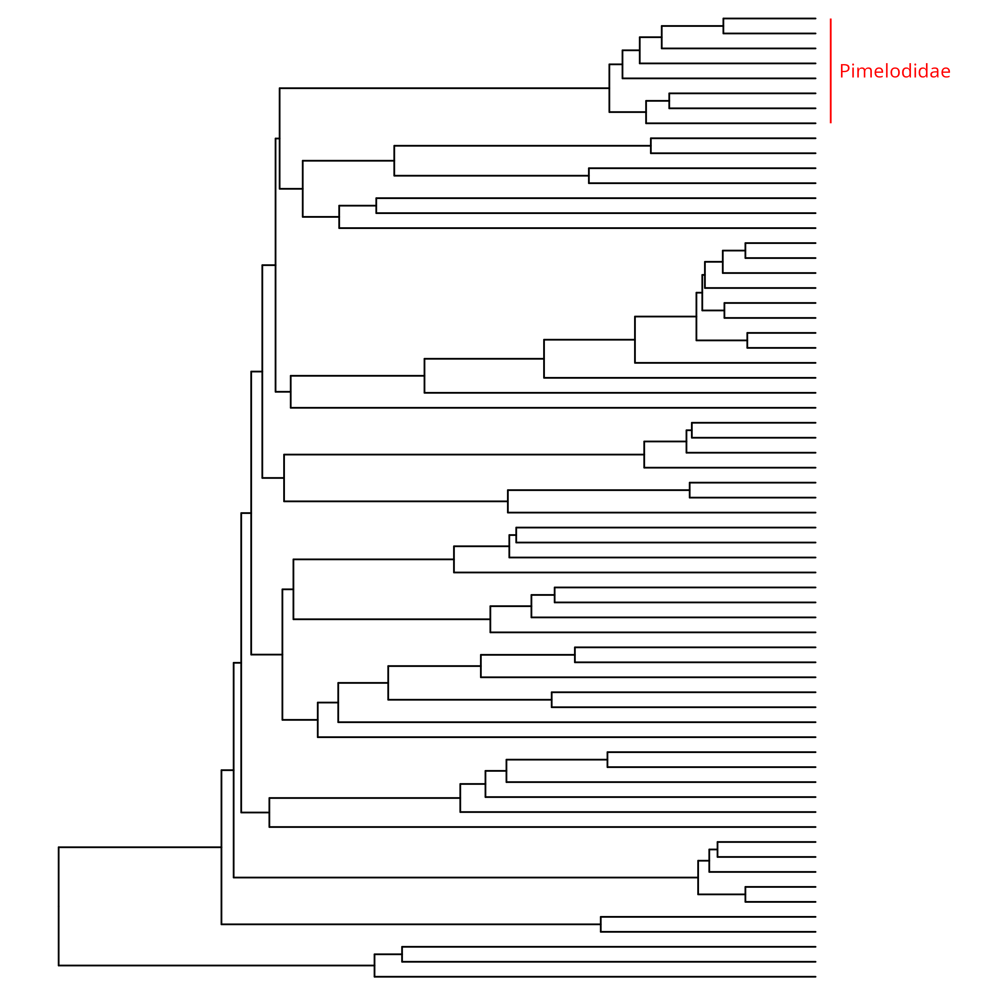
y que tal si identificamos varias familias:
<- fishdata %>% filter (Family== "Siluridae" ) %>% dplyr:: select (sciname)<- getMRCA (fishtree,Siluridae$ sciname)<- fishdata %>% filter (Family== "Loricariidae" ) %>% dplyr:: select (sciname)<- getMRCA (fishtree,Loricariidae$ sciname)<- fishdata %>% filter (Family== "Bagridae" ) %>% dplyr:: select (sciname)<- getMRCA (fishtree,Bagriidae$ sciname)
Ahora podemos jugar con varios parámetros gráficos
+ xlim (NA , 110 )+ geom_cladelab (node= nodepimelo,label = "Pimelodidae" ,offset= 0 ,barcolor= "#93C83E" ,textcolor= "#93C83E" ,angle= 0 ,offset.text= 0.1 ,fontsize= 4 )+ geom_cladelab (node= nodesiluri,label= "Siluridae" ,offset= 0 ,barcolor= "#007BA7" ,textcolor= "#007BA7" ,angle= 0 ,offset.text= 0.1 ,fontsize= 4 )+ geom_cladelab (node= nodelori,label= "Loricariidae" ,offset= 0 ,barcolor= "#AD5691" ,textcolor= "#AD5691" ,angle= 0 ,offset.text= 0.1 ,fontsize= 4 )+ geom_cladelab (node= nodeBagri,label = "Bagridae" ,offset= 0 ,barcolor= "#EE3224" ,textcolor= "#EE3224" ,angle= 0 , offset.text= 0.1 ,fontsize= 4 )
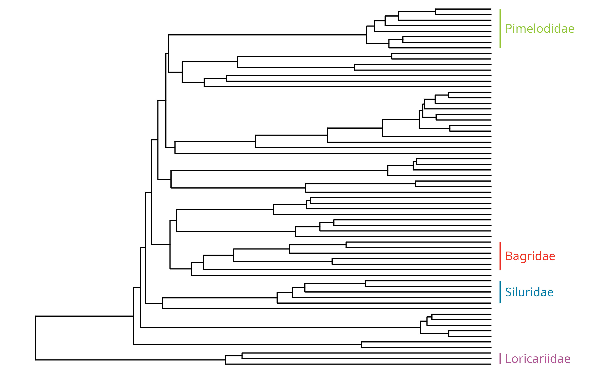
También podemos realizar una anotación entre dos taxa, que pudieran o no estar relacionados, utilizando el parámetro geom_strip():
+ xlim (0 ,120 )+ geom_strip ("Neoarius graeffei" ,"Gogo arcuatus" , label= " Un clado polifilético" , barsize = 2 , offset.text = 0.2 )
Resaltar
Otro parámetro de anotación muy interesante es geom_highlight , el cual nos permite destacar clados en particular, utilizando los nodos de ancestro en común:
+ geom_highlight (node= 80 ,alpha= 0.5 ,fill= "#93C83E" ,type = "rect" )
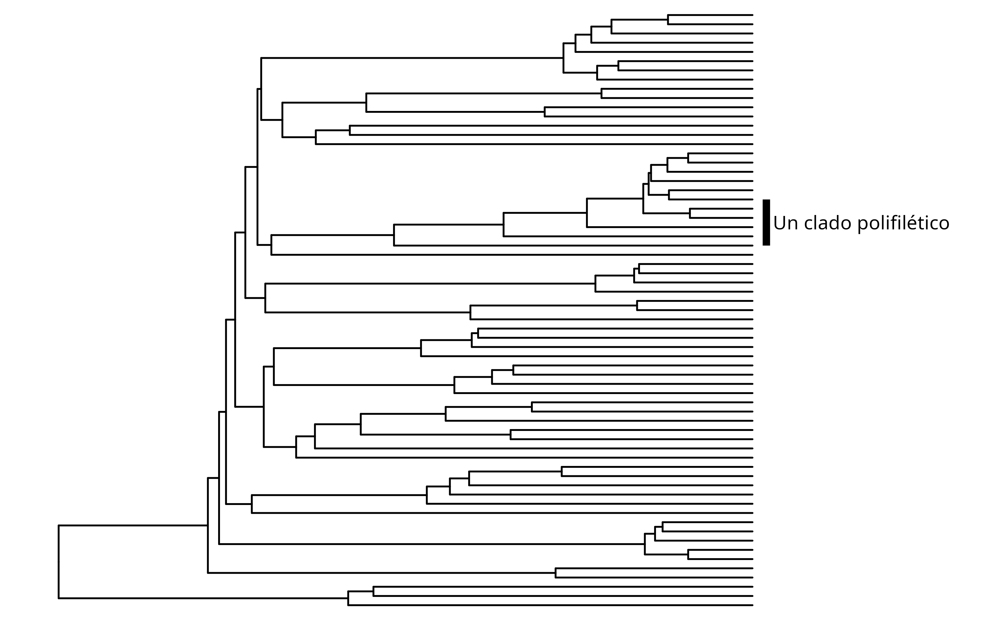¿Qué clado es este? …
+ geom_highlight (node= 80 ,alpha= 0.5 ,fill= "#93C83E" ,type = "rect" )+ geom_cladelab (node= 80 ,label = "Pimelodiade" ,offset= 0 ,barcolor= "#93C83E" ,textcolor= "#93C83E" , offset.text= 0 )+ xlim (0 ,110 )
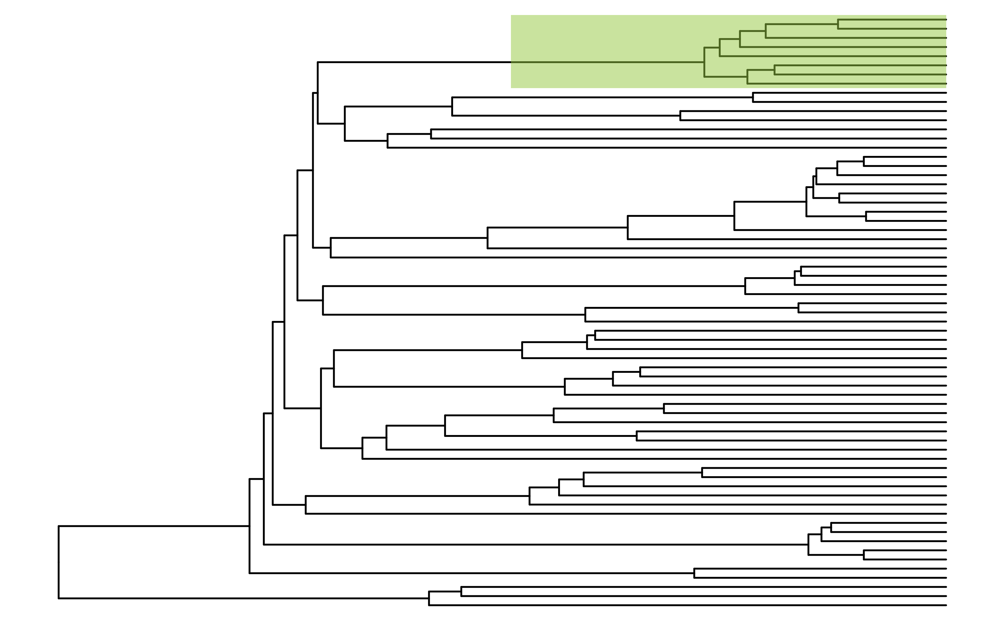
Phylopic
En ggtree como en ggplot podemos incluir imagenes de recursos en línea como phylopic o enriquecerlas con imágenes propias.
Para poder hacer uso de esta función, primero debemos cargar 2 paquete extra:
library ("rsvg" )library ("rphylopic" )
Probemos con una especie de nuestro interes:
<- pick_phylopic (name = "Ambystoma mexicanum" , n = 1 , view = 1 )
[1] "575eaa51-6c9b-4d36-9881-b8463c68ebbc"
Pueden explorar esta info: rphylopic viñeta
Guardar siluetas
<- get_uuid (name = "Erythromma najas" )# obtener el identificador unico de la imagen <- get_phylopic (uuid = uuid,format = "vector" ) #obtener imagen <- recolor_phylopic (img,0.7 , "blue" ,fill= "black" )plot (img)save_phylopic (img = img, path = "Cetops.png" ,width = 500 , height = 500 )
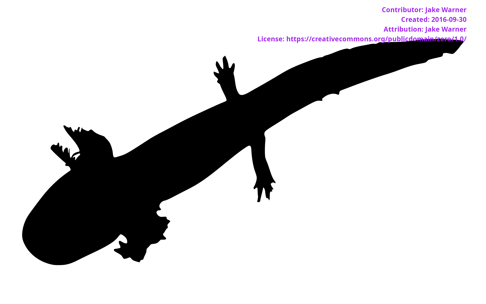
Para hacer uso de las imagenes en nuestra filogenia, primero debemos hacer una tabla con los nodos, el nombre de la especie o clado y el phylopic_id.
En este ejemplo utilizaré los clados Pimelodidae , Siluridae ,Loricariidae . Encontrar los phylopic_id es fácil usando la función phylopic_uid()
<- phylopic_uid (c ("Phractocephalus hemioliopterus" ,"Siluridae" ,"Ameiurus" ,"Chaetostoma microps" ))
Con estos ids, ya podemos crear nuestra tabla con los datos necesarios y después gráficar nuestra filogenia:
<- data.frame (node= c (nodepimelo,nodesiluri,nodeBagri,nodelori),image= ids$ uid,Family= c ("Pimelodidae" ,"Siluridae" ,"Bagridae" ,"Loricariidae" ),colorss= c ("#93C83E" ,"#007BA7" ,"#EE3224" ,"#AD5691" ),size= c (0.1 ,0.1 ,0.1 ,0.05 ))
node image Family colorss size
1 80 6cb85c3d-c455-4e9f-bfa3-fa1f8bc5c0cd Pimelodidae #93C83E 0.10
2 119 7cb387d7-9b23-4e5c-a007-2d938339cb8a Siluridae #007BA7 0.10
3 113 7a6448e5-09c4-40c8-8378-599d7f974bfe Bagridae #EE3224 0.10
4 128 e557aeed-4adf-4953-ad1b-45490d3d7f3d Loricariidae #AD5691 0.05
Y podemos crear figuras con colores personalizados
<- setNames (dt$ colorss, dt$ Family)+ ylim (- 10 ,80 )+ geom_cladelab (data = dt,mapping = aes (node = node, label = Family,image = image, color = Family ),geom = "phylopic" ,offset.text= 4 , imagesize= dt$ size,)+ scale_color_manual (values = my_colors)
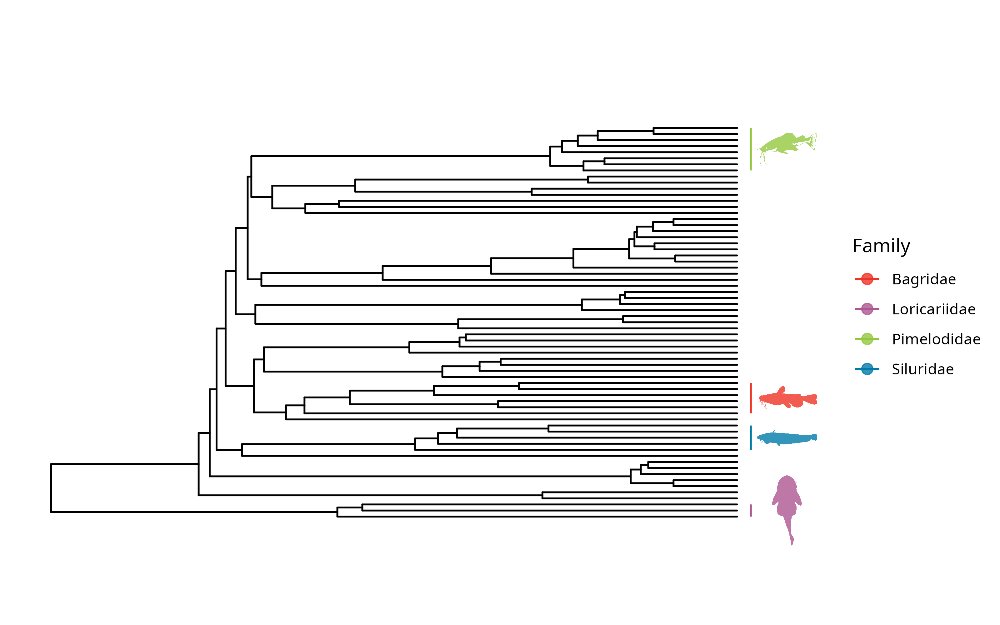
Y podemos combinar otros parametros que ya conociamos:
+ ylim (- 10 , 80 ) + geom_cladelab (data = dt,mapping = aes (node = node,label = Family, image = image,color = Family,size = size),geom = "phylopic" ,offset.text = 4 ) + scale_size_identity () + geom_highlight ( data = dt,mapping = aes (node = node,fill = Family,colour = Family),type = "rect" )+ scale_color_manual (values = my_colors) + scale_fill_manual (values = my_colors)
<- ggtree (fishtree,layout= "circular" ,color= "black" )+ ylim (- 10 , 80 ) + geom_cladelab (data = dt,mapping = aes (node = node,label = Family, image = image,color = Family,size = size),geom = "phylopic" ,offset.text = 6 ) + scale_size_identity () + geom_highlight ( data = dt, mapping = aes (node = node,fill = Family,colour = Family),type = "rect" )+ scale_color_manual (values = my_colors) + scale_fill_manual (values = my_colors)
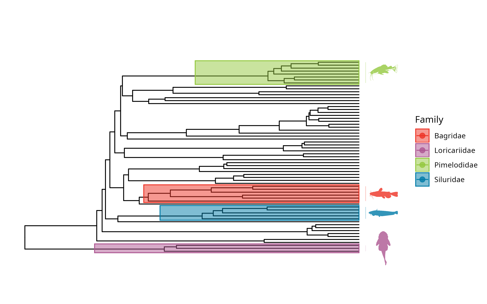
Atributos de las especies
También se puede usar ggtree, para graficar atributos de las especies en la filogenia.
Para hacer esto, primero debemos cargar los atributos, en este caso usaremos la longitud estándar máxima y el hábito migratorio:
<- read.table (here ("data" ,"DataFish.txt" ))$ label<- gsub ("_" ," " ,fishdata$ label)head (fishdata)
Genus.x Family Order Class
Synodontis_contractus Synodontis Mochokidae Siluriformes Actinopteri
Mochokiella_paynei Mochokiella Mochokidae Siluriformes Actinopteri
Chiloglanis_asymetricaudalis Chiloglanis Mochokidae Siluriformes Actinopteri
Atopochilus_savorgnani Atopochilus Mochokidae Siluriformes Actinopteri
Amphilius_atesuensis Amphilius Amphiliidae Siluriformes Actinopteri
Auchenoglanis_biscutatus Auchenoglanis Claroteidae Siluriformes Actinopteri
salinity Length AnaCat
Synodontis_contractus Freshwater 9.7 Non-migratory
Mochokiella_paynei Freshwater 3.6 Non-migratory
Chiloglanis_asymetricaudalis Freshwater 7.6 Non-migratory
Atopochilus_savorgnani Freshwater 10.5 Non-migratory
Amphilius_atesuensis Freshwater-Marine 9.3 Non-migratory
Auchenoglanis_biscutatus Freshwater 54.0 Potamodromous
label
Synodontis_contractus Synodontis contractus
Mochokiella_paynei Mochokiella paynei
Chiloglanis_asymetricaudalis Chiloglanis asymetricaudalis
Atopochilus_savorgnani Atopochilus savorgnani
Amphilius_atesuensis Amphilius atesuensis
Auchenoglanis_biscutatus Auchenoglanis biscutatus
Una vez cargados los datos, la manera más fácil de utilizarlos es uniendolos a la filogenia usando la función full_join, es importante que las especies estén etiquetadas como label, para que la función las reconozca:
<- left_join (fishtree,fishdata,by= "label" )
¡Listo! Ahora tenemos una filogenia con atributos y podemos graficarlos juntos
Primero graficaremos los valores continuos de la longitud sobre las puntas del árbol en una escala de colores:
<- ggtree (datatree)+ geom_tippoint (aes (color= Length),size= 3 )
podemos también personalizar esta escala:
+ geom_tippoint (aes (color= Length),shape= 19 ,size= 3 )+ scale_colour_gradient (low= 'yellow' , high= 'red' ,breaks= c (15 ,50 ,100 ,150 ,200 ,300 ))
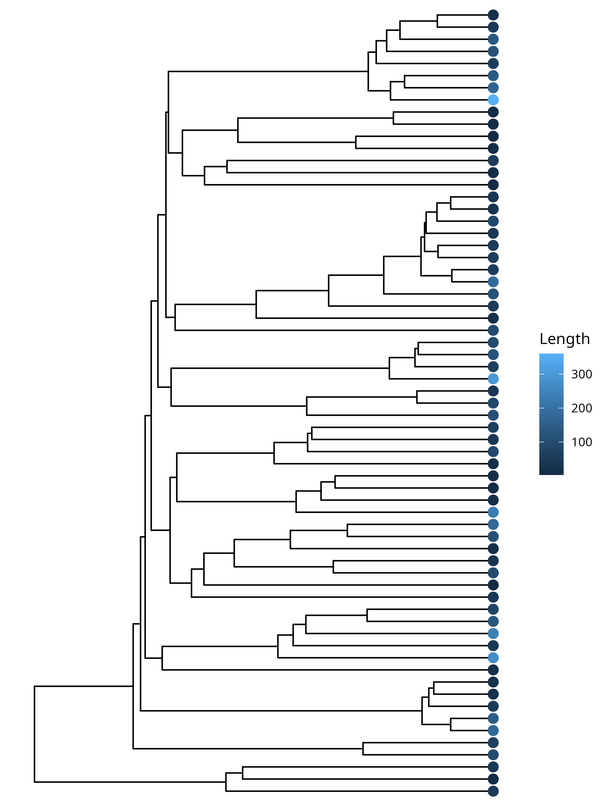
¿Cómo se verían los datos discretos?
+ geom_tippoint (aes (color= salinity),shape= 15 ,size= 4 )+ scale_colour_manual (values = c ("blue" ,"gray" ,"skyblue" ))
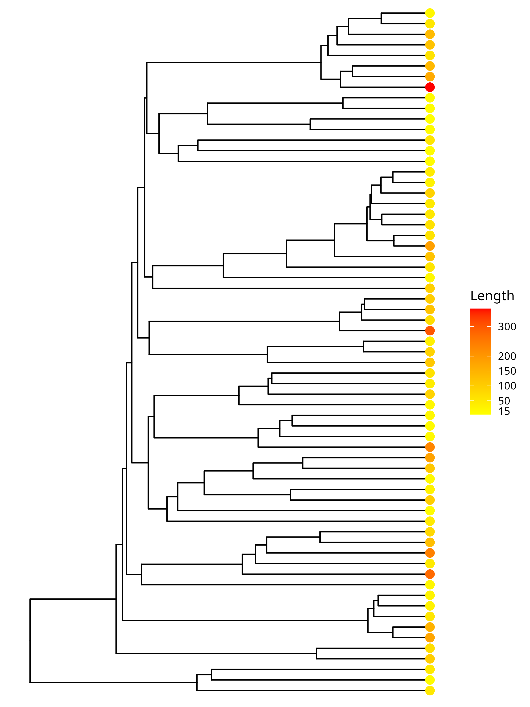
¿Podemos incluir mas de un dato?
<- p4+ scale_color_manual (values = c ("blue" ,"gray" ,"skyblue" ))+ scale_fill_manual (values = c ("blue" ,"gray" ,"skyblue" ))<- data.frame (id= p4$ data$ label,value= p4$ data$ Length) + geom_facet (panel= "Length" ,data = dd[1 : 65 ,],geom= geom_col, mapping= aes (x= Length,color= salinity,fill= salinity),orientation= 'y' )+ theme_tree2 ()
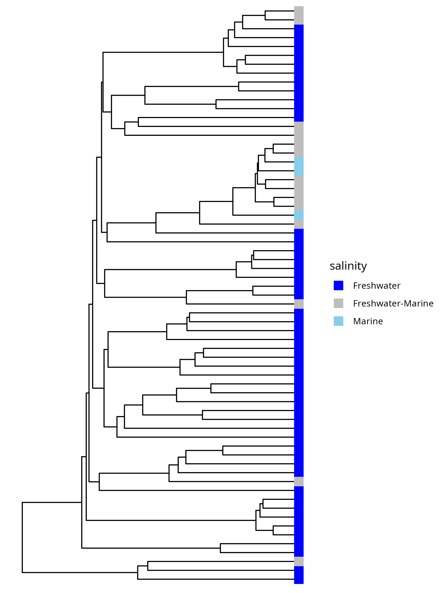
ggtreeExtra
library (ggtreeExtra)<- p4+ geom_tippoint (aes (colour= AnaCat))+ scale_color_manual (values = c ("#3d5a80" ,"#98c1d9" ,"#e0fbfc" ,"#293241" ,"#ee6c4d" ))+ geom_fruit (data= dd[1 : 65 ,],geom= geom_bar,mapping = aes (y= id,x= value,group= salinity,fill= salinity),pwidth= 0.38 , orientation= "y" , stat= "identity" ,axis.params= list (axis = "x" ,text.size = 1.8 ,hjust = 1 ,vjust = 0.5 ,nbreak = 3 ))+ scale_fill_manual (values = c ("blue" ,"gray" ,"skyblue" ))
También podemos incluir nuestras propias imágenes
En este ejemplo usaremos una filogenia parafiletica con las Familias Pimelodidae ,Doradidae y Loricariidae
Entonces, primero recuperamos un representante de cada grupo, ape es muy bueno para esto usando la función keep.tip :
<- fishtree %>% keep.tip (c ("Pimelodus maculatus" , "Lithodoras dorsalis" ,"Loricariichthys anus" ))$ tip.label<- c ("Pimelodidae" , "Doraridae" ,"Loricariidae" )<- ggtree (grouptree,size= 1 )+ xlim (0 ,120 )+ geom_tiplab (color= "navyblue" ,offset = 0.5 ,size= 5 )
Podemos visualizar las imagenes de cada tip. Para esto las imagenes deben tener el nombre exacto del grupo o especie y el mismo formato:
Las fotos aqui presentadas provienen del Proyecto cavfish
Hasta ahora hemos usado filogenias conocidas. Pero, ¿Qué pasa si no tengo información de la filogenia del grupo que estoy estudiando?
¿Se acuerdan de esta filogenia?
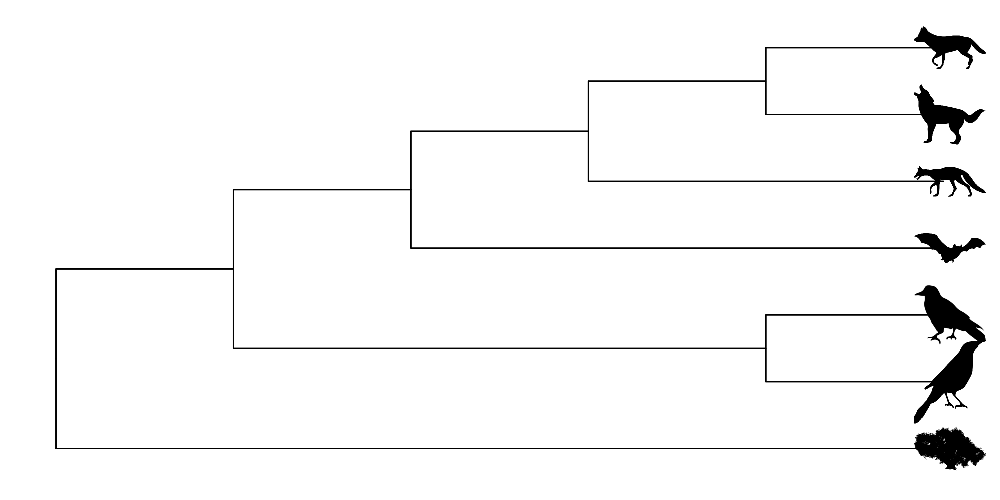
Desde Open tree of Life (OTL), podemos obtener una filogenia utilizando las especies de nuestro interes
OTL tiene un apquete para R (rotl) que podemos usar para obtener filogenias
library ("rotl" )<- rotl:: tnrs_match_names (c ("Quiscalus mexicanus" ,"Canis lupus" ,"Corvus corax" ,"Canis latrans" ,"Vulpes vulpes" ,"Desmodus rotundus" ,"Sideroxylon celastrinum" )) %>% pull (ott_id) %>% tol_induced_subtree (label_format= "name" )
Progress [---------------------------------] 0/210 ( 0%) ?s
Progress [==============================] 210/210 (100%) 0s
<- ggtree (otl_tree)+ xlim (0 ,9 )+ geom_tiplab (color= "blue" )
Para la función de rtol, NO es necesario introducir las especies en orden, ya que ésta recuperará la taxonomia válida y nos arrojará una filogenia.
En este caso, OTL nos regresó exactamente la misma filogenia que creamos al principio:
<- ggtree (Nktree)+ xlim (0 ,9 )+ geom_tiplab (color= "red" )/ p_nk
Ahora podemos crear nuestras propias figuras usando estos rescursos.